Staircase Policy
Streaming Inference for World-Action Models with Large Action Chunks
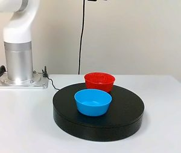
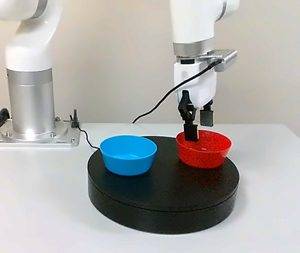
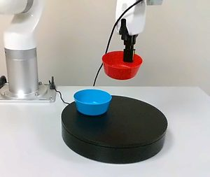
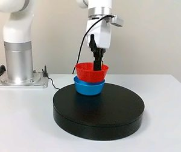
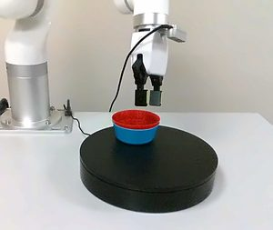
camera: o0World-Action Models (WAMs) improve robotic manipulation by conditioning action generation on predicted future observations, but future prediction adds further inference overhead to already expensive iterative action generation. Action chunking can amortize this cost over multiple actions, yet performance degrades over long execution horizons because later actions remain conditioned on stale observations.
We introduce Staircase Policy, a streaming inference and training framework that turns a flow-matching VLA into a JEPA-style WAM and partitions a large action chunk into sub-chunks at staggered denoising stages. Near-term actions are executed as soon as they become available, while later actions continue to be refined. At each sub-chunk boundary, the future latent is re-predicted from the latest observation and used to update all unexecuted actions, enabling long-horizon execution without repeated full policy inference. The resulting future-prediction error can further serve as a signal for adaptive chunking.
S-WAM achieves 97.7% on LIBERO and 87.9% on LIBERO-Plus, and improves performance across multiple policy backbones and real-robot tasks. It reaches 292.7 executed actions per second, 3.62× the throughput of conventional execution at comparable accuracy, while reducing time-to-first-action from 123.6 to 73.3 ms. With additional inference optimizations, throughput further increases to 642.9 actions per second.
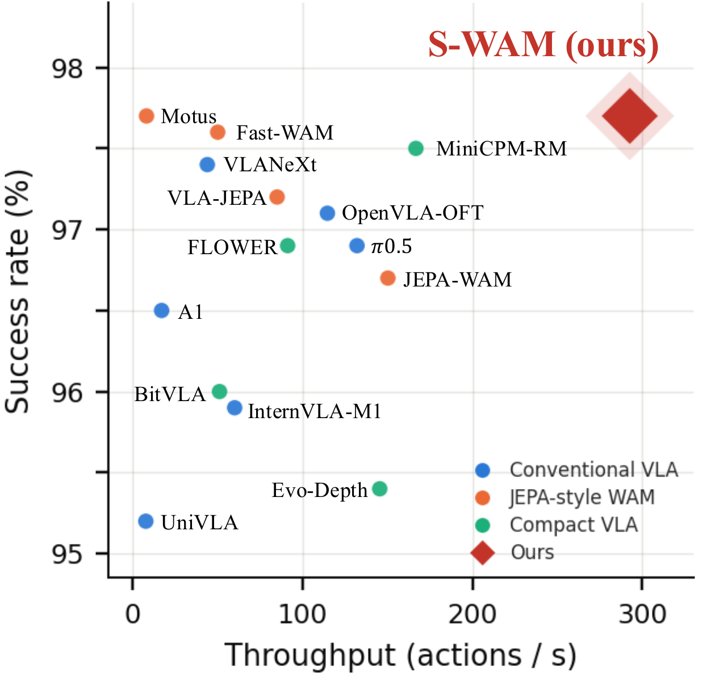
Success rate versus measured inference throughput on LIBERO. Existing methods show a clear speed–accuracy trade-off: policies with higher success often rely on shorter replanning intervals and larger backbones, while faster policies achieve lower success. S-WAM reaches 97.7% at 292.7 executed actions per second, matching the highest success rate at 1.8× the throughput of the next-fastest method shown. Success rates come from the original papers; every throughput is measured from released checkpoints under one protocol.
Execute the near actions now. Keep refining the far ones.
Staircase Policy adds a lightweight future predictor to a flow-matching VLA: a frozen vision encoder gives h = E(o), and a decoder g predicts the feature map of a near-future observation. The action expert is conditioned on the current observation, the predicted future latent, and the cached semantic context. Two properties of long-horizon action generation shape the design.
Denoising needs vary across the horizon
Near-term actions are easier to predict than distant ones, and flow-matching trajectories are nearly straight, so one velocity evaluation already points toward the data. The chunk is split into K sub-chunks of size G (H=KG; we use H=50, K=5, G=10). The first sub-chunk is read out after one denoising step and each later one gets one step more. Every buffer position stays at the same flow time τ, so the expert always sees the shared-τ inputs it was trained on.
Visual conditioning should be refreshed
Object poses, contacts and robot configuration change during execution, while the instruction and high-level semantics stay fixed. At each sub-chunk boundary only the lightweight future predictor is re-run on the new observation; the vision-language context is reused. The backbone runs once per chunk and the predictor once per boundary at millisecond-scale cost. The refreshed condition updates every unexecuted action without a full replan.
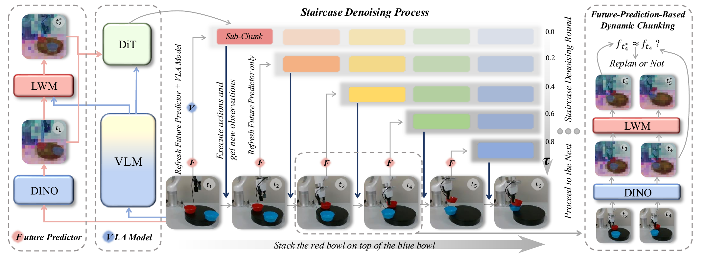
Training under the deployment schedule
Standard training never exposes the policy to partially denoised buffers, one-step readouts, mid-chunk changes in conditioning, or self-predicted future latents. We therefore train under the same streaming schedule used at deployment and supervise the readout the controller actually consumes rather than the velocity. This also converges considerably faster than conventional chunk training.
Future-prediction error as a chunking signal
Because the refresh runs as a chain, every boundary yields a prediction–realization pair that a policy denoising the chunk only once never has. The discrepancy grows when the scene departs from what the model anticipated, so thresholding it makes the executed horizon depend on the data instead of being fixed at K sub-chunks.
Nine tasks on an xArm 850, running onboard a Jetson Thor
Thirty teleoperated demonstrations per task were collected with a Meta Quest 3, and each task is evaluated over 40 trials. Six tasks are static and dynamic versions of three skills. In the dynamic versions the objects ride a turntable that turns continuously at 22.5°/s, so the target keeps moving while the robot acts. The other three tasks cover sustained, precise and multi-stage manipulation. Pick a task to see its demonstration and per-task success.
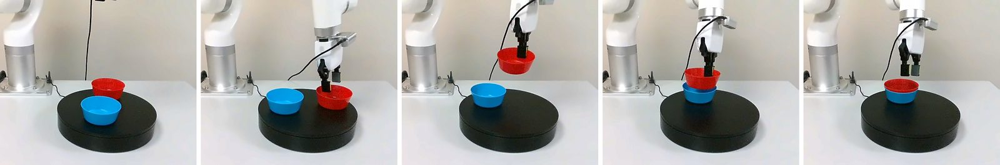
On static tasks, vanilla execution loses ground when it commits to 50 actions (57.1 against 67.5 at Hexec=20). The dynamic tasks expose both vanilla regimes. Frequent replanning is hurt by inference latency while the turntable keeps moving, giving only 10.8. Executing 50 actions per query helps (25.8), but the later actions drift over the long horizon. S-WAM updates its unexecuted actions from new observations and reaches 44.2. Vanilla at Hexec=50 is compute-matched with S-WAM; at Hexec=20 it replans 2.5× as often.
Fast enough for large chunks, accurate enough to trust them
We evaluate on LIBERO (four suites of ten tasks), LIBERO-Plus (seven perturbation categories over the same tasks) and DOMINO (dynamic manipulation with scene changes during execution). Unless stated otherwise the base policy is a 2.3B latent World-Action Model. Within each backbone, S-WAM and the vanilla baseline share data, initialization and training configuration. For every 50 executed actions, S-WAM with K=5 and vanilla execution at Hexec=50 both need five denoiser passes and one backbone pass, so Hexec=50 is the compute-matched baseline and Hexec=10 the conventional short-horizon one.
Inference speed on the LaWAM host
Measured at batch 1 on the same device. CUDA Graph captures the geometry and denoising calls to cut launch overhead; prompt cache reuses the frame-invariant prompt computation. Neither changes the actions produced, so the success rate is unchanged. Against vanilla at the horizon that matches its accuracy (Hexec=10), S-WAM raises throughput 3.62× and cuts time to first action by 40.7%.
Full optimization ladder
| Method | Action/s ↑ | Speedup | TTFA (ms) ↓ |
|---|---|---|---|
| Vanilla (Hexec=10), eager | 80.9 ± 1.0 | 1.00× | 123.6 |
| Vanilla (Hexec=50), eager | 402.5 ± 6.8 | 4.98× | 124.2 |
| Ours (Hexec=50), eager | 292.7 ± 9.4 | 3.62× | 73.3 |
| + geo & DiT CUDA Graph | 625.7 ± 16.1 | 7.73× | 53.2 |
| + prompt cache | 642.9 ± 18.2 | 7.95× | 48.6 |
Robustness on LIBERO-Plus
Success rate (%) across seven perturbation dimensions. S-WAM has the best average, 87.9%, 17.3 points above the compute-matched vanilla baseline. Robot initial-state perturbation is where that baseline is weakest (49.7); S-WAM reaches 76.0 there, the best score in the table, consistent with the benefit coming from re-observing scene geometry during execution.
| Method | Background | Robot | Camera | Language | Noise | Layout | Light | Avg. |
|---|---|---|---|---|---|---|---|---|
| ST-WAM | 74.2 | 60.1 | 55.4 | 79.3 | 79.5 | 74.3 | 93.0 | 73.7 |
| DreamWAM | 71.5 | 63.6 | 53.7 | 94.8 | 67.1 | 80.7 | 96.6 | 75.4 |
| VLA-JEPA | 93.6 | 67.1 | 63.3 | 85.4 | 66.3 | 85.1 | 95.6 | 79.5 |
| ROCKET-VLA | 91.8 | 41.8 | 91.8 | 78.0 | 92.5 | 81.2 | 94.7 | 81.7 |
| VLANeXt | 82.5 | 65.7 | 90.4 | 81.8 | 94.1 | 80.8 | 95.9 | 84.5 |
| WorldPilot | 96.4 | 60.6 | 82.8 | 87.2 | 93.6 | 80.5 | 98.6 | 85.7 |
| InternVLA-A1.5 | 98.2 | 55.1 | 83.1 | 86.9 | 95.6 | 85.2 | 96.4 | 85.8 |
| Vanilla, Hexec=50 | 83.0 | 49.7 | 77.1 | 53.9 | 80.0 | 64.8 | 85.7 | 70.6 |
| Vanilla, Hexec=10 | 95.2 | 73.4 | 91.5 | 77.7 | 94.3 | 82.1 | 96.0 | 87.2 |
| S-WAM (ours), Hexec=50 | 96.6 | 76.0 | 89.5 | 85.2 | 90.4 | 79.3 | 98.6 | 87.9 |
Training efficiency
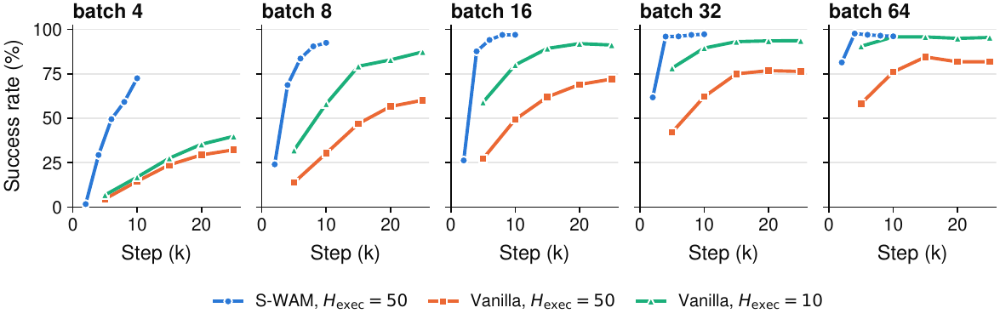
Training under the streaming schedule costs more per step but converges much faster. At batch size 4, S-WAM reaches 72.5 success after 10k steps, against 32.2 for vanilla even after 25k steps; the gap narrows to 14.3 points at batch size 64. Each streaming step costs 1.87× more FLOPs, yet S-WAM ends at a higher success rate while spending fewer total training FLOPs.
Where the gains come from
Execution length and the speed–accuracy trade-off
Executing more actions per inference hurts conventional policies. With only Hexec varied, our backbone drops from 95.2 at Hexec=10 to 82.4 at 50, and π0.5 drops from 93.2 to 66.4. S-WAM executes the full 50-action chunk and still reaches 97.7 and 96.5 on the two backbones, above the best vanilla result on either. The limitation lies in executing later actions under stale conditioning, not in the chunk length itself.
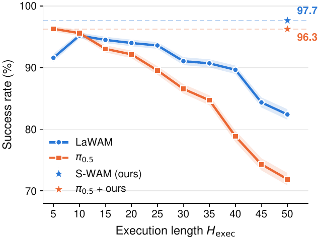
Choice of denoising steps and sub-chunk size
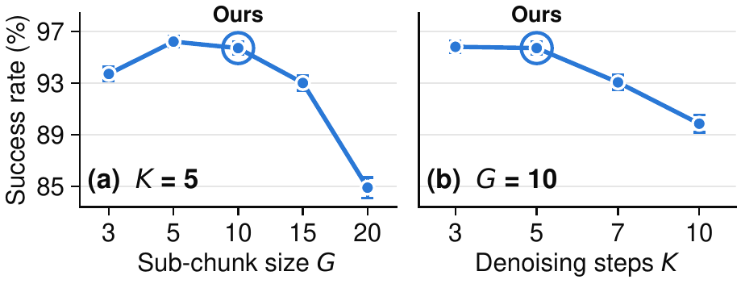
The chunk length is set by the number of denoising steps K and the sub-chunk size G; increasing either lengthens the executed horizon and raises throughput. Performance stays stable over a broad range and degrades only when the chunk becomes too long for the available denoising steps. All experiments use K=5 and G=10 unless stated otherwise.
Small models vs. execution-level acceleration
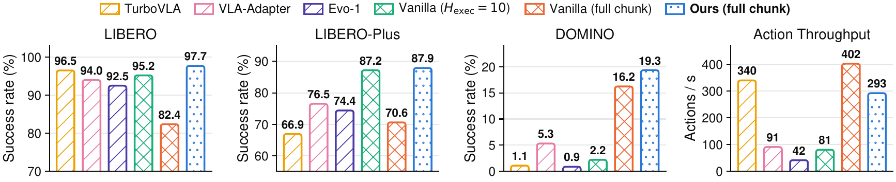
TurboVLA (0.2B), VLA-Adapter (0.6B) and Evo-1 (0.77B) are strong on LIBERO, but the gap widens on harder benchmarks: 66.9–76.5% on LIBERO-Plus against 87.9% for S-WAM, and 0.9–5.3% on DOMINO against 19.3%. Shrinking the model works well in easier settings; execution-level acceleration keeps the capacity of a larger policy. The two paths are complementary.
Future-prediction error as an adaptive-chunking signal
Commit-X always executes exactly X sub-chunks before replanning. pX sets the gating threshold to the X-th percentile of the future-prediction error on the validation set, replans when the error exceeds it, and commits to at least four sub-chunks. Adaptive chunking adds an operating point between commit-4 and commit-5: p80 reaches 96.2 success with only a modest further drop in throughput.
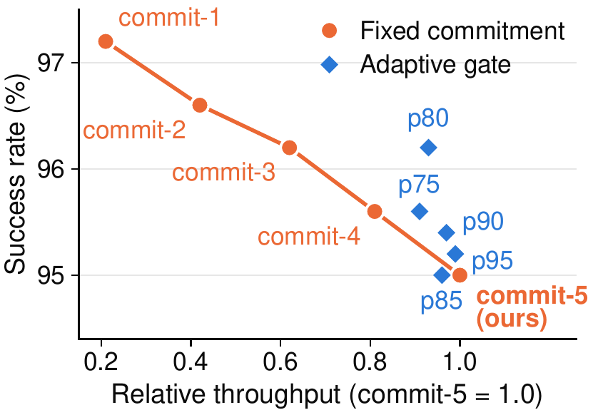
Transferability across policy backbones
S-WAM transfers across backbones. Each backbone keeps its own training configuration; the schedule, objectives and method hyper-parameters are unchanged. Act/s is executed actions per second; TTFA is time to first action (ms). π0.5 and FLOWER were not pretrained to predict future latents.
| Backbone | Policy | Spatial | Object | Goal | Long | Avg. | Act/s ↑ | TTFA ↓ |
|---|---|---|---|---|---|---|---|---|
| LaWAM (2.3B) | S-WAM | 98.6 | 100.0 | 97.0 | 95.0 | 97.65 | 292.7 | 73.3 |
| Vanilla, Hexec=10 | 96.2 | 98.4 | 95.6 | 90.6 | 95.20 | 80.9 | 123.6 | |
| Vanilla, Hexec=50 | 87.2 | 80.6 | 88.0 | 73.8 | 82.40 | 402.5 | 124.2 | |
| π0.5 (3.5B) | S-WAM | 98.0 | 98.6 | 95.2 | 94.2 | 96.50 | 243.2 | 80.6 |
| Vanilla, Hexec=10 | 94.6 | 99.0 | 91.6 | 87.4 | 93.15 | 75.7 | 132.2 | |
| Vanilla, Hexec=50 | 66.4 | 67.6 | 72.8 | 58.6 | 66.35 | 378.3 | 134.8 | |
| FLOWER (1.0B) | S-WAM | 97.4 | 99.6 | 98.6 | 88.8 | 96.10 | 234.3 | 72.7 |
| Vanilla, Hexec=10 | 98.8 | 99.2 | 96.6 | 89.6 | 96.05 | 85.5 | 117.0 | |
| Vanilla, Hexec=50 | 85.6 | 85.0 | 90.6 | 67.0 | 82.05 | 416.0 | 120.2 |
Against vanilla execution at Hexec=50, S-WAM improves success by 15.25, 30.15 and 14.05 points on LaWAM, π0.5 and FLOWER. On all three backbones it matches or beats vanilla at Hexec=10 while raising throughput 2.74–3.62× and cutting time to first action by 37.9–40.7%.
@article{sun2026staircase,
title = {Staircase Policy: Streaming Inference for World-Action Models
with Large Action Chunks},
author = {Sun, Guoheng and Chen, Chen and Wang, Jin and Li, Ang
and Lv, Teresa},
journal = {arXiv preprint},
year = {2026}
}